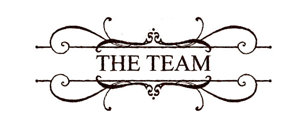

Constantly innovating, Astra Dance Theatre combines imaginative dance stylings, thrilling original score, and absorbing, interactive digital scenography. This growing company fascinates audiences of all ages with the incomparable experience of live, interactive, submersive theater.
We pull influence from classic literature and historic artforms to creat cutting edge dance and projection performances that captivate audiences of all ages. We bridge the gap between the technological age and the great classics. We offer programs small to large for discerning venues around the globe. Our award winning production team, paired with our select group of in-house talent make up our current tribe.
David Wilkinson (Founder, Artistic Director): David received the 1026-page, The Complete Tales and Poems of Edgar Allan Poe, and tried to read it at a single sitting, many long years ago. Ex-private pilot, ex-skydiver, ex-paraglider, his body is now self-grounded, but his imagination still soars. In addition to founding Astra Dance Theatre, David is also a UCLA professor, author of five books and fifty-odd articles and a traveler to strange destinations—Ulan Bator, Timbuktu, Titicaca... He was once diving in search of a lost and sunken city off the coast of Africa, only to be driven off by its guardian jellyfish.
David (as writer) and Regan Remy (as composer) founded the dance troupe which grew into the Astratroupers and then the Astra Dance Theatre. David’s Poe-esque tale Astra von Berlifitzing was set to music by Regan and performed at Burning Man in 2008, at the Electric Lodge ion 2009, and at the Million Dollar Theater in 2010. Since the Electric Lodge is in Venice (California) and the Million Dollar is on Broadway (Los Angeles) David is proud to claim that Astra has been performed in Venice and on Broadway without ever having to leave the LA city limits! David next narrated Poe’s unusually light love story Eleonora and contributed his voice to Clive Barker’s I Dreamed... at the El Portal in 2012. He co-scripted The Cabinet of Dr. Caligari with the directorial genius Sasha Travis in May 2012, supplying the voices of the Director and the Police.

Regan Remy (Co-Creator, Composer): Falling in love with Fur Elise at age 8 set Regan “High Priestess” on her course to be a composer. With work recently on display at New York’s Bryan Park for Armory Week, she has written music for art installations, dance exhibitions, prime time TV and big budget film. She started out scoring film trailers (Munich, The New World, Team America, Resident Evil, Lost, The Grid, Alias, 24). She has performed all over the world including Australia, Europe, and Indonesia. State-side she’s performed at Burning Man, Labyrinth of Jareth, Faerieworlds, Comicon and as an opera-singing mermaid in cirque show, Oceania. Regan and David Wilkinson founded the Astra Dance Theatre based on a mutual passion for music, dance, and classical literature.
Sasha Travis (Director): Travis sees art as the connector of all things, unifying all aspects of production, on the stage and off, to tell a compelling and passionate story. Travis moved to Los Angeles in 2008, assuming a directing position for Sypher Art Studios, taking on role of Lead Director for the Labyrinth of Jareth Masquerade Ball. She joined the producing team for Labyrinth of Jareth in 2009. Travis has also had the pleasure of directing shows for the Los Angeles County Museum of Art, and joined the Astra Dance Theatre as Director in 2010.